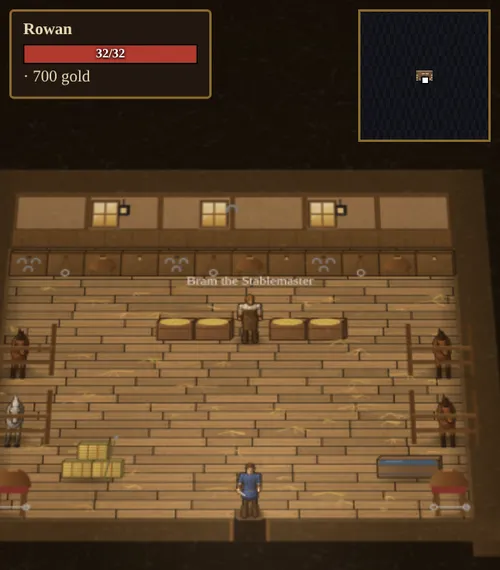
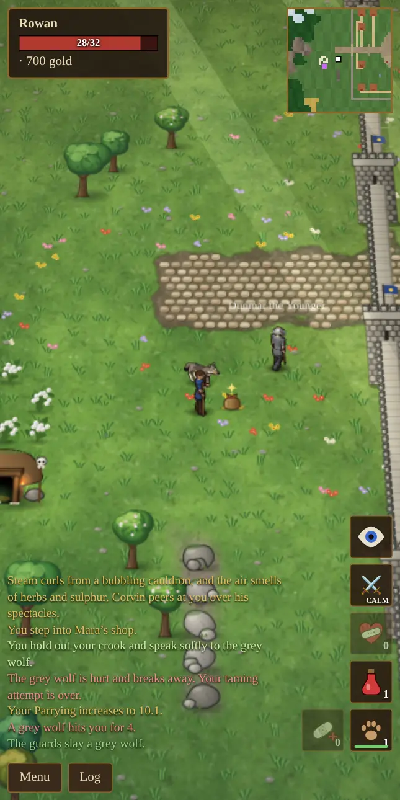
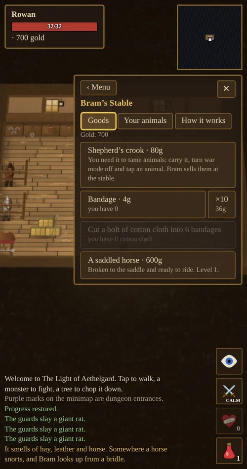
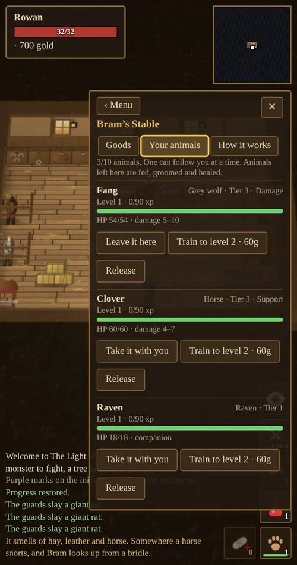
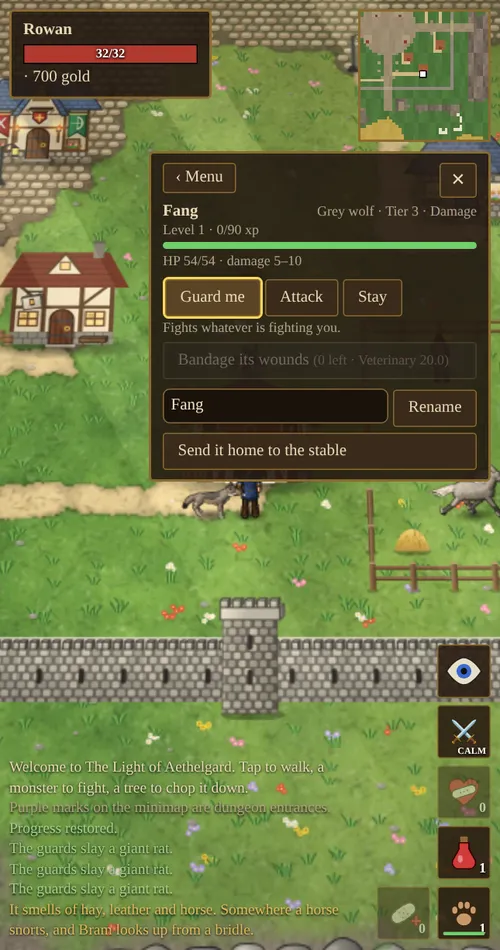

Chapter 9 of 12
Animals & Taming
Win over wolves, bears, horses and more with a shepherd’s crook, keep them at Bram’s stable, and heal them when they are hurt.
Getting started
Bram Hollis keeps the stable, a red barn with a hayloft and a fenced paddock in town. He sells the shepherd’s crook (80 gold), teaches Animal Taming and Veterinary up to 50, and looks after any animal you leave with him.
To tame an animal you need three things:
- A shepherd’s crook in your weapon hand. Equip it like any weapon.
- War mode off (the button reads CALM).
- Enough Animal Taming. You can attempt an animal once your skill is within 10 points of its difficulty.
Tap the animal. Your hero walks up, holds out the crook and speaks softly to it.

How a taming attempt works
- Approach. You can start from up to five tiles away if you have a clear line of sight. The animal calms the moment you begin and holds still, even if it had already noticed you.
- Coax. For about five seconds your hero hums, inches closer and waits, with a message at each stage.
- Result. Success tames the animal. Failure leaves it spooked.
Anything that gets hurt breaks the attempt off, and the animal will not settle again until you try again, so do not start while something else is attacking you.

Your chance
At a skill equal to the animal’s difficulty you have a 35% chance. Each point above adds about 3%, and each point below takes about 3% away, never going under 5% or over 95%.
| Skill vs. difficulty | −10 | −5 | Equal | +5 | +10 | +15 |
|---|---|---|---|---|---|---|
| Chance | 5% | 18% | 35% | 52% | 68% | 85% |
Every attempt, win or lose, can raise Animal Taming. A harder animal teaches more.
When it fails
A wild animal that you fail to tame will either back off, unconvinced (try again), or snarl and lunge at you. Gentle animals such as sheep and deer startle and bolt, or shy away from the crook. A bird or bat you called down flies off.
Creeping up on hunters
Beasts that hunt, such as wolves, notice you from a distance. A tamer with a crook in hand and war mode off is harder to notice. The distance at which a tameable beast spots you is 6 tiles minus 1 for every 25 points of Animal Taming, and one tile less again while you are sneaking, to a minimum of 1. At Animal Taming 50 and sneaking, you can walk up to within 3 tiles before a wolf wakes to you.
Tap an animal while sneaking and you begin taming it at once. While you hold a crook, sneaking never picks pockets, so a tap on a creature or person never turns into a theft. (People are simply spoken to.)
Birds and bats
You do not need to call birds and bats. When you see a raven or bat overhead, tap it with your crook in hand and war mode off. It flutters down and lands beside you, and the attempt begins. Ravens (difficulty 5) fly by day and bats (difficulty 20) by night and underground. This does not work indoors. If the attempt fails, the bird flaps off.
What you can tame
An animal’s tier sets how hard it is to win and how strong it grows. A class says what it does for you.
| Tier | Animal | Difficulty | Class |
|---|---|---|---|
| 1 | Squirrel | 0 | Companion |
| 1 | Cat | 5 | Companion |
| 1 | Raven | 5 | Companion |
| 1 | Giant rat | 10 | Companion |
| 1 | Sheep | 10 | Companion |
| 2 | Goat | 15 | Companion |
| 2 | Deer | 20 | Companion |
| 2 | Bat | 20 | Companion |
| 2 | Lizard | 22 | Companion |
| 2 | Cow | 25 | Companion |
| 3 | Dog | 30 | Support |
| 3 | Fox | 35 | Damage |
| 3 | Viper | 38 | Damage |
| 3 | Horse | 40 | Support, rideable |
| 3 | Grey wolf | 45 | Damage |
| 4 | Bull | 55 | Tank |
| 4 | Mountain lion | 62 | Damage |
| 5 | Brown bear | 75 | Tank |
| Special | Nightmare | 100 | Damage, rideable |
| Special | Young wyrm | 100 | Damage |
- Tier 1 and 2 companions do not fight, but they come along and bring you little finds.
- Tier 3 to 5 animals fight beside you.
- Damage pets hit hard. Tanks soak up blows and draw attention. Support pets help: dogs lick your wounds and sniff out hidden foes, and horses carry you.
- Nightmares and young wyrms answer only to a grandmaster. You need Animal Taming 100 to even try, and even then your chance is low: about 25% for a nightmare and 15% for a wyrm at 100, rising slowly with any skill above that from gear, up to 60%.
Bosses, outlaws, named and elite creatures, and your own allies cannot be tamed.
Naming and keeping your animals
When you succeed, you are asked to name your new animal, and it arrives with a name already suggested. You can rename it later from its panel.
The stable


A tamed animal is kept at Bram’s stable until you want it. The stable holds ten animals, and one can follow you at a time.
Talk to Bram and choose Let me see my animals to open the Your animals tab, where you can:
- Take it with you (only while you are at the stable).
- Leave it here, which sends it back to the stable.
- Train it to the next level for 60 gold × the square of its current level (so 60g for level 1 to 2, 240g for 2 to 3, and 540g for 3 to 4).
- Release it to let it go. The button asks you to confirm.
An animal left at the stable is fed, groomed and healed to full. The How it works tab recaps the rules.
Levels
Pets have levels 1 to 10. They gain experience from battles you fight together, and Bram’s training adds levels directly. Your Animal Taming limits how far they can grow: the cap is 1 + your skill ÷ 10, so a pet needs Animal Taming 90 to reach level 10. Each level adds health and damage, and lowers the delay between attacks.
Your pet in the field
When a pet is with you, a paw button sits at the bottom of the right-hand button column, under the spellbook. Tap it to open the pet panel:
- Guard me (follow), Attack and Stay for animals that fight. Guard me fights whatever is fighting you, Attack goes after your target or the nearest foe, and Stay waits where it is and defends itself. Companions only follow or stay.
- Bandage its wounds, described below.
- Ride and Dismount, for horses and nightmares.
- Rename, and Send it home to the stable.
A small bandage button also appears beside the paw while a pet is with you, as a one-tap way to heal it. Tap the pet itself to pet it.

Riding
Horses and nightmares can be ridden from the pet panel. A mounted hero travels about twice as fast. You cannot ride indoors, so lead your horse outside first, and a horse will not carry you while you are polymorphed.
Bram sells a saddled horse for 600 gold, but only to riders he trusts: you need Animal Taming 30. Wild horses roam the open meadows and steppes, and Bram says to watch for the greys, which are fast and stubborn. Two of Bram’s own horses graze in the paddock beside the stable. They are not for sale or for taming, only for looking at.
Healing your animals
Pets heal slowly on their own. A bandage heals them right away, and Veterinary makes bandaging faster, more reliable and stronger.
| Veterinary | 0 | 25 | 50 | 100 |
|---|---|---|---|---|
| Time to bandage | 3.6s | 3.2s | 2.8s | 2.0s |
| Chance it works | 60% | 70% | 80% | 97% |
| Health restored | 12–18 | 21–27 | 30–36 | 47–53 |
You need to stand near your pet and stay still while you bandage. Bram sells bandages at 4 gold each (36 for ten), and Mara stocks them too. Or you can bring Bram a bolt of cotton cloth and he will cut it into six. A failed bandage is used up and teaches less.
Animals in the wild
Taming is a gentler path than hunting. Wild animals you do not tame can still be hunted (see Food, Fishing & Camping), with two exceptions: killing a wild cat or dog costs you reputation, because people in Aethelgard are fond of them (see Reputation). Pets that fight on your side never cost you anything.
Next: The World.